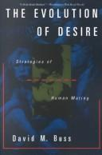

The Evolution of Desire: Strategies of Human Mating
Book·David M. Buss, 1994·欲望的演化

Buss draws on a survey across 37 cultures to discuss similarities and differences between men and women in mate preferences, and their evolutionary explanations.
- Author
- David M. Buss
- Year
- 1994
- Difficulty
- Beginner
- Kind
- Primary text
- Schools
- Evolutionary Psychology
- Core theories
- Sexual Strategies Theory
Editions
- Chinese edition 《欲望的演化（修订版）》 [美] 戴维·巴斯 · tr. 王叶 / 谭黎 · 中国人民大学出版社 · 2020 Douban 8.5 (2341 ratings) Douban page ↗
- English edition The Evolution of Desire: Strategies of Human Mating David M. Buss · Revised and updated edition, Basic Books · 2003 Open Library ↗